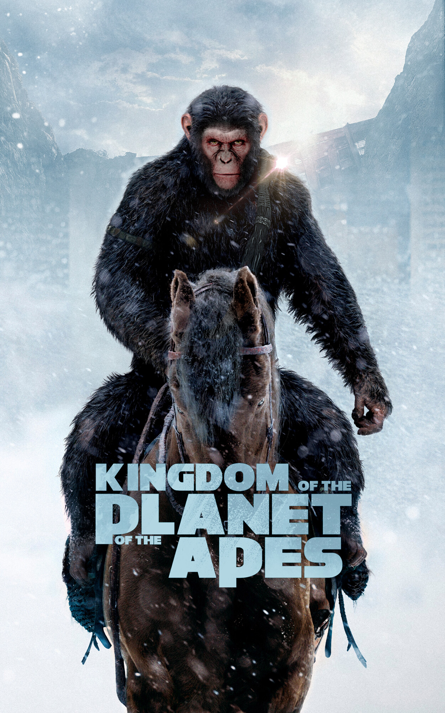
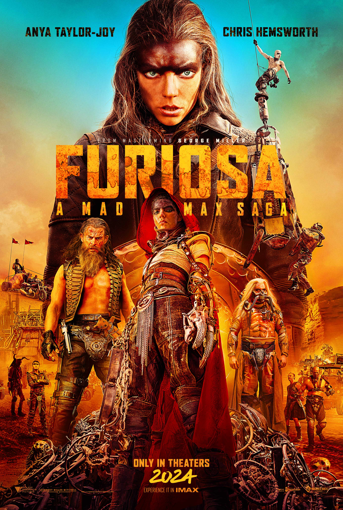
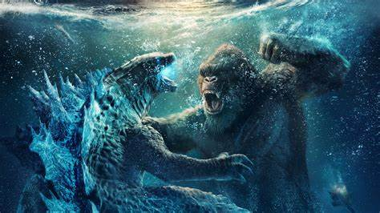

| Movie | Image | Summary | Source |
| DeadPool and Wolveine | Deadpool & Wolverine is a 2024 American superhero film based on Marvel Comics featuring the characters Deadpool and Wolverine. Produced by Marvel Studios, Maximum Effort, and 21 Laps Entertainment, and distributed by Walt Disney Studios Motion Pictures, it is the 34th film in the Marvel Cinematic Universe (MCU) and the sequel to Deadpool (2016) and Deadpool 2 (2018). The film was directed by Shawn Levy from a screenplay he wrote with Ryan Reynolds, Rhett Reese, Paul Wernick, and Zeb Wells. Reynolds and Hugh Jackman respectively star as Wade Wilson / Deadpool and Logan / Wolverine, alongside Emma Corrin, Morena Baccarin, Rob Delaney, Leslie Uggams, Aaron Stanford, and Matthew Macfadyen. In the film, Deadpool learns that the Time Variance Authority is set to destroy his home universe and works with a reluctant Wolverine from another universe to stop them. | Link | |
| Kingdom Of the planet Of Apes |  | Kingdom of the Planet of the Apes is a 2024 American science fiction action film directed by Wes Ball and written by Josh Friedman. It is the fourth installment in the Planet of the Apes reboot film series and the tenth film overall, serving as a standalone sequel to War for the Planet of the Apes (2017). The film stars Owen Teague, Freya Allan, Kevin Durand, Peter Macon, and William H. Macy. The film takes place many generations after the events of War and follows Noa (Teague), a young chimpanzee who embarks on a journey alongside Mae (Allan), a human woman, to determine the future for apes and humans alike. | |
| Furiosa: A Mad Max Saga |  | Furiosa: A Mad Max Saga is a 2024 Australian post-apocalyptic action film directed and produced by George Miller, who wrote the screenplay with Nico Lathouris. It is the fifth installment in Miller's Mad Max franchise, and the first not focused on series protagonist Max Rockatansky, instead acting as both a spinoff prequel to Mad Max: Fury Road (2015) and an origin story for the Fury Road character Furiosa, portrayed by Anya Taylor-Joy and Alyla Browne in the prequel. Set 15 to 20 years before the events of Fury Road, the film follows the title character's life for over a decade, from her kidnapping by the forces of warlord Dementus (Chris Hemsworth) to her ascension to the rank of Imperator. Tom Burke also stars as Praetorian Jack, a military commander who befriends Furiosa. Several Fury Road cast members return in supporting roles, including John Howard, Nathan Jones, and Angus Sampson reprising their characters. | Link |
| Godzilla v/s Kong |  | Godzilla vs. Kong is a 2021 American monster film directed by Adam Wingard. Produced by Legendary Pictures and distributed by Warner Bros. Pictures, it is a sequel to Kong: Skull Island (2017) and Godzilla: King of the Monsters (2019), and is the fourth film in the Monsterverse. It is also the 36th film in the Godzilla franchise, the 12th film in the King Kong franchise, and the fourth Godzilla film to be completely produced by an American film studio.[b] The film stars Alexander Skarsgård, Millie Bobby Brown, Rebecca Hall, Brian Tyree Henry, Shun Oguri, Eiza González, Julian Dennison, Lance Reddick, Kyle Chandler, and Demián Bichir. Brown and Chandler reprise their roles from the previous Godzilla film. In the film, Kong clashes with Godzilla after humans move the ape from Skull Island to the Hollow Earth, homeworld of the monsters known as "Titans", to retrieve a power source for a secret weapon intended to stop Godzilla's mysterious attacks. | Link |